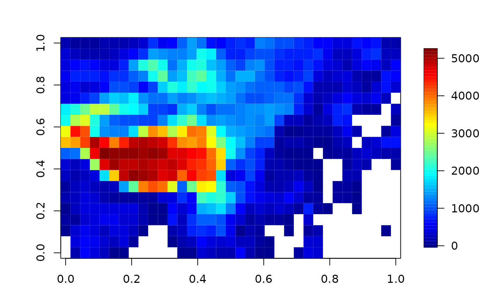
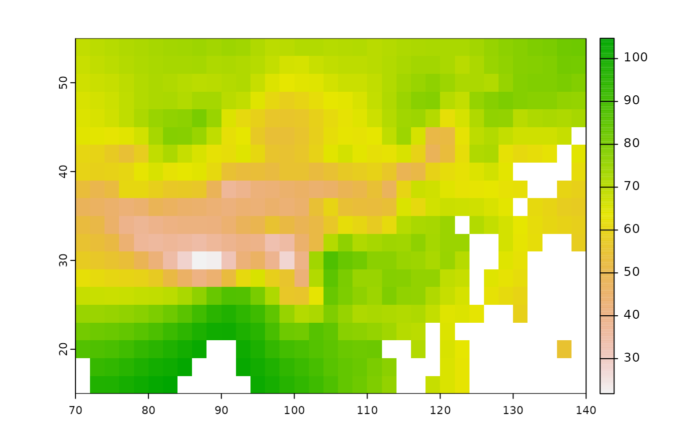

spInterp_Tps.RdThin plate spline regression
spInterp_Tps(
points,
dat,
range,
res = 1,
Z = NULL,
ZGrid = NULL,
.parallel = FALSE,
...
)The covariates for the grid unrolled as a matrix. Columns index
the variables and rows index the grid locations. E.g. For
evaluation on a 10X15 grid and with 2 covariates. dim( ZGrid) == c(10,15, 2). and so dim( Z) = c(150, 2) and
Z[,1] <- c( ZGrid[,,1])
An array or list form of covariates to use for
prediction. This must match the same dimensions from the
grid.list / gridList argument.
If ZGrid is an array then the first two indices are the x and y
locations in the
grid. The third index, if present, indexes the covariates. e.g. For
evaluation on
a 10X15 grid and with 2 covariates. dim( ZGrid) == c(10,15, 2).
If ZGrid is a list then the components x and y shold match those of grid list and
the z component follows the shape described above for the no list
case.
others to fields::Tps()
## `spInterp_Tps` example -------------------------
dat <- dat_RH[, .(lon, lat, alt, RH)]
X <- dat[, .(lon, lat)] %>% as.matrix()
Y <- dat[, .(RH)] %>% as.matrix()
Z <- dat[, .(alt)] %>% as.matrix()
range <- c(70, 140, 15, 55)
res = 2 # resolution
# prepare dems
r_dem <- get_chinadem(res = res)
ZGrid <- rast2zgrid(r_dem)$ZGrid # a 3d array
image.plot(ZGrid[,,1]) # should looks normal

r = spInterp_Tps(X, Y, range, res = res, Z = Z, ZGrid = ZGrid)
print(r)
#> List of 2
#> $ coord :Classes ‘data.table’ and 'data.frame': 700 obs. of 2 variables:
#> ..$ lon: num [1:700] 71 73 75 77 79 81 83 85 87 89 ...
#> ..$ lat: num [1:700] 16 16 16 16 16 16 16 16 16 16 ...
#> ..- attr(*, ".internal.selfref")=<externalptr>
#> $ predicted: num [1:700] NaN 97.1 97.4 99.3 101.3 ...
#> - attr(*, "class")= chr "spInterp"
#>
#> [data] ----------------
#> class : SpatRaster
#> dimensions : 20, 35, 1 (nrow, ncol, nlyr)
#> resolution : 2, 2 (x, y)
#> extent : 70, 140, 15, 55 (xmin, xmax, ymin, ymax)
#> coord. ref. :
#> source(s) : memory
#> name : V2
#> min value : 21.82314
#> max value : 104.73406
plot(r)

# with dem
kford_ml(X, Y, FUN = spInterp_Tps,
range = range, res = res, Z = Z, ZGrid = ZGrid)
#>
|
| | 0%
|
|============== | 20%
|
|============================ | 40%
|
|========================================== | 60%
|
|======================================================== | 80%
|
|======================================================================| 100%
#> # A tibble: 6 × 12
#> kfold R pvalue R2 NSE KGE RMSE MAE Bias Bias_perc AI n_sim
#> <chr> <dbl> <dbl> <dbl> <dbl> <dbl> <dbl> <dbl> <dbl> <dbl> <dbl> <int>
#> 1 Fold1 0.851 0 0.724 0.706 0.85 6.52 4.63 0.073 0.001 0.921 168
#> 2 Fold2 0.875 0 0.765 0.748 0.861 6.73 4.82 -1.46 -0.022 0.93 168
#> 3 Fold3 0.909 0 0.827 0.827 0.861 5.39 4.01 -0.023 0 0.95 168
#> 4 Fold4 0.901 0 0.813 0.798 0.885 5.52 3.88 -1.38 -0.02 0.945 168
#> 5 Fold5 0.919 0 0.844 0.84 0.917 5.02 3.75 -0.157 -0.002 0.958 168
#> 6 all 0.89 0 0.791 0.786 0.877 5.88 4.22 -0.589 -0.009 0.941 840
#>
#> Fold index:
#> List of 5
#> $ Fold1: int [1:168] 1 2 23 32 55 56 59 67 72 75 ...
#> $ Fold2: int [1:168] 4 5 17 22 25 26 29 30 34 38 ...
#> $ Fold3: int [1:168] 3 6 9 19 21 28 33 35 36 37 ...
#> $ Fold4: int [1:168] 8 10 11 12 15 16 20 31 42 45 ...
#> $ Fold5: int [1:168] 7 13 14 18 24 27 44 49 52 53 ...
#> NULL
# without dem
kford_ml(X, Y, FUN = spInterp_Tps,
range = range, res = res, Z = NULL, ZGrid = ZGrid)
#>
|
| | 0%
|
|============== | 20%
|
|============================ | 40%
|
|========================================== | 60%
|
|======================================================== | 80%
|
|======================================================================| 100%
#> # A tibble: 6 × 12
#> kfold R pvalue R2 NSE KGE RMSE MAE Bias Bias_perc AI n_sim
#> <chr> <dbl> <dbl> <dbl> <dbl> <dbl> <dbl> <dbl> <dbl> <dbl> <dbl> <int>
#> 1 Fold1 0.849 0 0.72 0.704 0.844 6.54 4.66 0.53 0.008 0.92 168
#> 2 Fold2 0.88 0 0.775 0.771 0.853 6.42 4.54 -0.726 -0.011 0.934 168
#> 3 Fold3 0.909 0 0.827 0.825 0.855 5.42 4.09 0.516 0.008 0.949 168
#> 4 Fold4 0.908 0 0.825 0.82 0.879 5.21 3.65 -0.81 -0.012 0.95 168
#> 5 Fold5 0.913 0 0.834 0.83 0.9 5.17 3.89 0.54 0.008 0.954 168
#> 6 all 0.891 0 0.794 0.793 0.868 5.78 4.17 0.01 0 0.942 840
#>
#> Fold index:
#> List of 5
#> $ Fold1: int [1:168] 1 2 23 32 55 56 59 67 72 75 ...
#> $ Fold2: int [1:168] 4 5 17 22 25 26 29 30 34 38 ...
#> $ Fold3: int [1:168] 3 6 9 19 21 28 33 35 36 37 ...
#> $ Fold4: int [1:168] 8 10 11 12 15 16 20 31 42 45 ...
#> $ Fold5: int [1:168] 7 13 14 18 24 27 44 49 52 53 ...
#> NULL